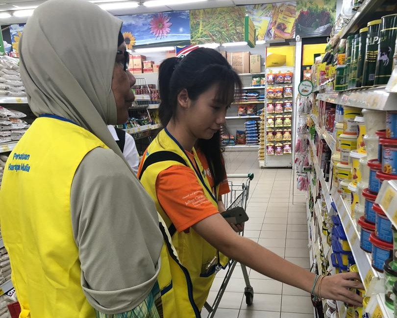
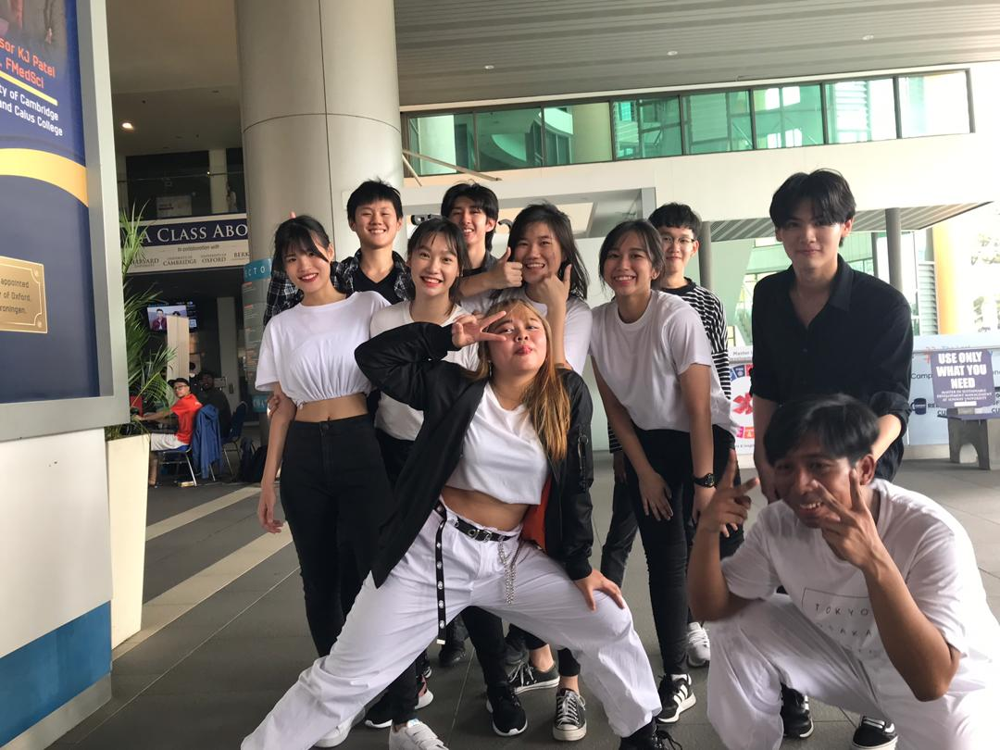
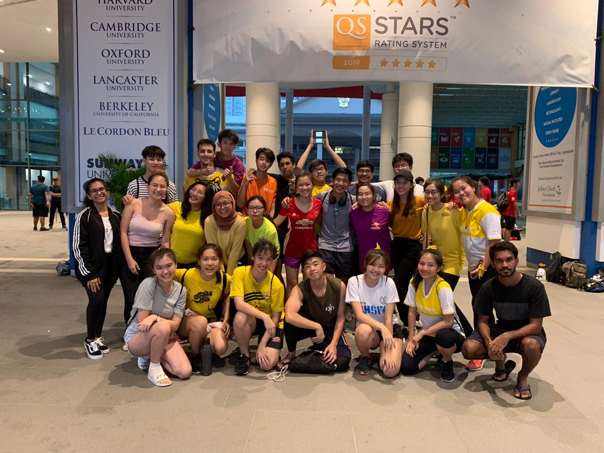
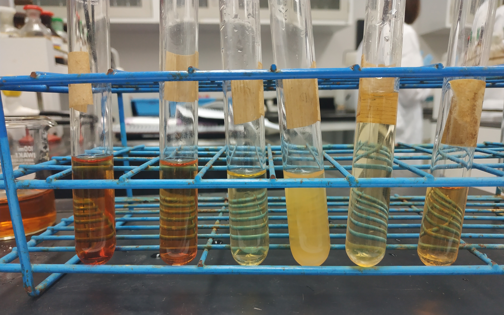
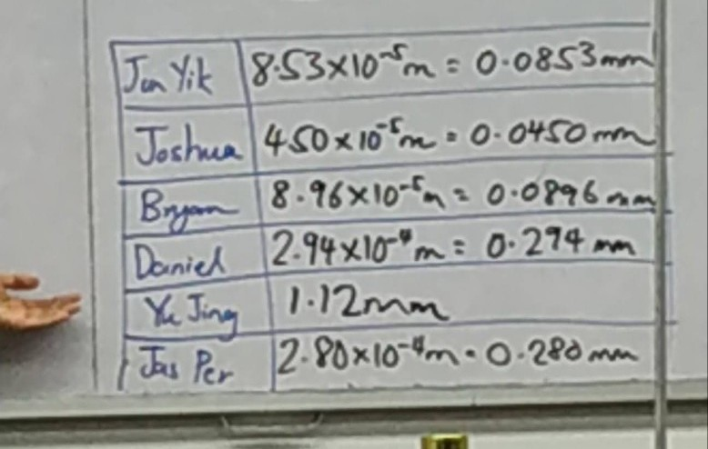
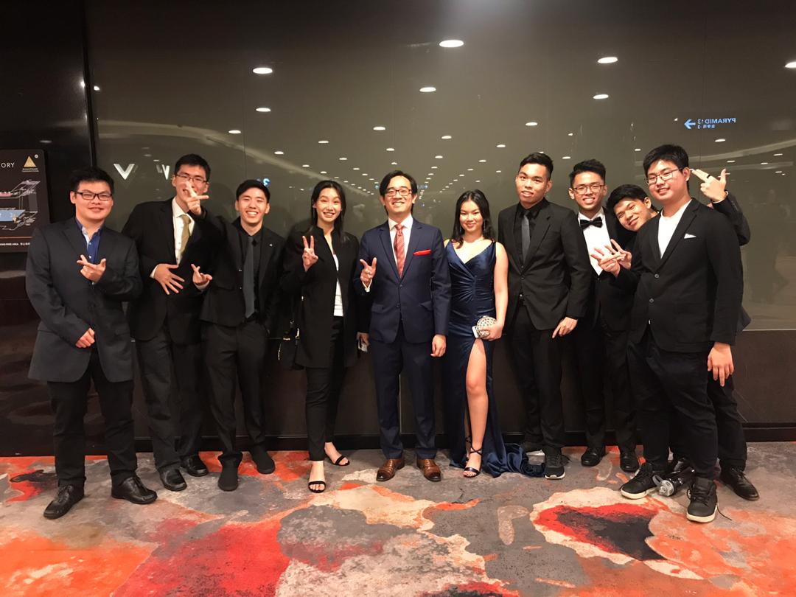
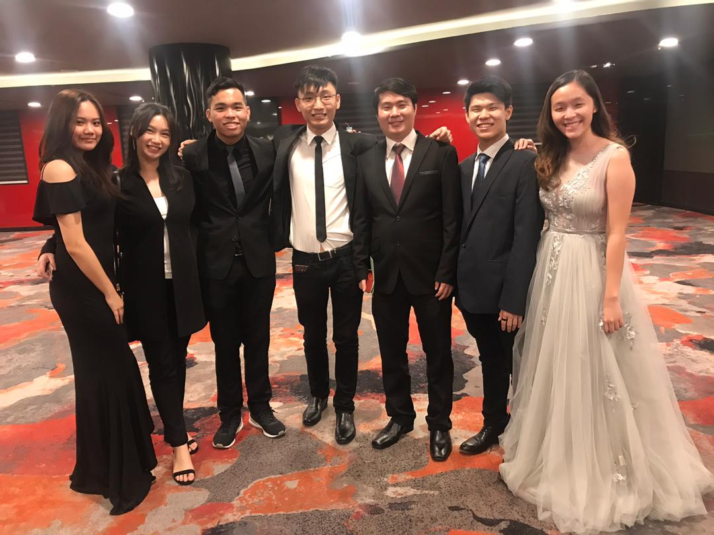

Sunway College
Pre-U in Sunway College.
Background
For context, public / government education in Malaysia is up until grade 11. In grade 12, students are able to choose whatever country's equivalent of grade 12 or diploma if they choose to do so before their bachelor's degree.
I chose Australian Matriculation (AUSMAT for short) in Sunway College, Malaysia. How AUSMAT worked was that 5 subjects are selected, while only 4 of the highest are attribute to the ATAR score, with the maximum being 99 ATAR. I chose 4 core subjects: Physics, Chemistry, Methods Mathematics and English as second language. My 5th subject was a general course which would not be contributed to my ATAR score, which was Computer Science
Academic
The coursework was broken down into theory and practical, with it being split quite evenly 50/50. However, the projects were grueling, with countless hours of research and writing into every report and preperation for presentations.
It was through AUSMAT that I realized I have a passion for computer science rather than civil engineering, which I had originally wanted to pursue. My professors throughout were helpful with their input as I was contemplating about my future career choice, and I will forever be grateful for their guidance and patience with me.
Extra curricular
Jiujitsu Club
My cousin and brother both spent time learning in their university days. Thus, I have always wanted to be more proactive in learning martial arts all over again. I would train every Tuesday night in the Sunway campus, but gradually went to the neighbouring university, Taylor's College, where the sensei taught Jiujitsu there every Monday as well.
My cousin and brother both spent time learning in their university days. Thus, I have always wanted to be more proactive in learning martial arts all over again. I would train every Tuesday night in the Sunway campus, but gradually went to the neighbouring university, Taylor's College, where the sensei taught Jiujitsu there every Monday as well.
Sunway Student Volunteer
I have always held the opinion of helping people whenever and however possible. Thus, once I gotten my driving liscencse, I applied for the volunteer club as they lack students who would be able to drive. I would spend my Saturdays volunteering, especially helping the elderly and those in need of help.
I have always held the opinion of helping people whenever and however possible. Thus, once I gotten my driving liscencse, I applied for the volunteer club as they lack students who would be able to drive. I would spend my Saturdays volunteering, especially helping the elderly and those in need of help.
Sunway Dance Club
I've always loved dancing. I learned ballet from the ages 5 to 17, and had to stop due to studies. I attended K-POP classes because that was the only time slot I could make it in between my other extra curricular activities. Though it was only an hour class, I would sweat a lot by the end of it. It also gives me something to think about other than classes.
I've always loved dancing. I learned ballet from the ages 5 to 17, and had to stop due to studies. I attended K-POP classes because that was the only time slot I could make it in between my other extra curricular activities. Though it was only an hour class, I would sweat a lot by the end of it. It also gives me something to think about other than classes.
Sunway Tech Club
This club is where I was able to attend big workshops where seniors will teach beginner coding, and guide us on how to further improve our project and works. I learned the fundamentals of HTML, CSS, JS and Java during these many workshops. I also learned how to use GitHub for the first time. Thanks to these workshops, I am able to pick up on skills and languages easier.
This club is where I was able to attend big workshops where seniors will teach beginner coding, and guide us on how to further improve our project and works. I learned the fundamentals of HTML, CSS, JS and Java during these many workshops. I also learned how to use GitHub for the first time. Thanks to these workshops, I am able to pick up on skills and languages easier.
Image Gallery
Right; Sunway Student Volunteer in shopping goods for the elderly in poverty

Right; Sunway Student Volunteer in helping select groceries with designated person in need

Left 3rd; Sunway Dance Club in Club Week

Bottom Left 3rd; Sports Day between all pre-u courses

Chemistry - Experiment with different kinds of metals

Physics - Calculaltion of hair width using scientific methods and equipments

Left 4th; Graduation Night with Physics professor and friends

Left 2nd; Graduation Night with Computer Science professor and friends